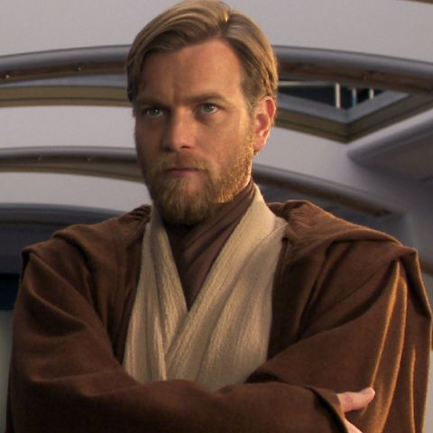

About
Droidekas is a club organized by Qatar University students. The main focus of the club is robotics and automation. The name, Droidekas, is derived from one of the robot types that appeared in the Star Wars franchise. In Droidekas, we aim at providing our members with premium knowledge about robotics, and to one day launch a startup that will act as one of the main suppliers of robotic devices to big companies and organizations including companies in the space industry.
Board
President: Yoda
President Yoda is the founder of the club. He has always been keen on learning all aspects of robotics and teaching them to the following generation. He has been selected as the best inventor in the International Invent Competition 3 times. Upon graduation, it is expected that he will continue his vision of spreading awareness concerning robotics to the younger generation through his startup.
Vice President: Mace Windu
Mace is the cofounder of Droidekas. He is the main operative regarding event organization and recruitment. Mace is very well-known for his prowess in all things programming. He has been one of the students selected by NASA to contribute in the Inquisitor spaceship.
Public Relations officer: Obi-Wan Kenobi
Dubbed by many as The Negotiator, Obi-Wan is well known for his negotiation and public speaking skills. With very good capabilities in programming and automation, he has been recognized by the masters of the trade.
Achievements
Achievements of the club over the years
-
2020
- Student Life Award for Clubs 2020
- Mad Science Award
-
2019
- Club of the Year 2019
-
2018
- Event Star
- Alien Tech Award
Events
Maker Faire Doha
What is Maker Faire? We call it the Greatest Show (& Tell) on Earth. As a celebration of the Maker Movement, it’s a family-friendly showcase of invention and creativity that gathers together tech enthusiasts, crafters, educators, tinkerers, food artisans, hobbyists, engineers, science clubs, artists, students, and commercial exhibitors.
Aliens Under Disguise
Aliens Under Disguise is gather of all technology geeks in Qatar. With popular speakers in the field and activities for all ages, the event has been able to attract hobbiests, engineers and scientists with an interest in tech development from all over the country.